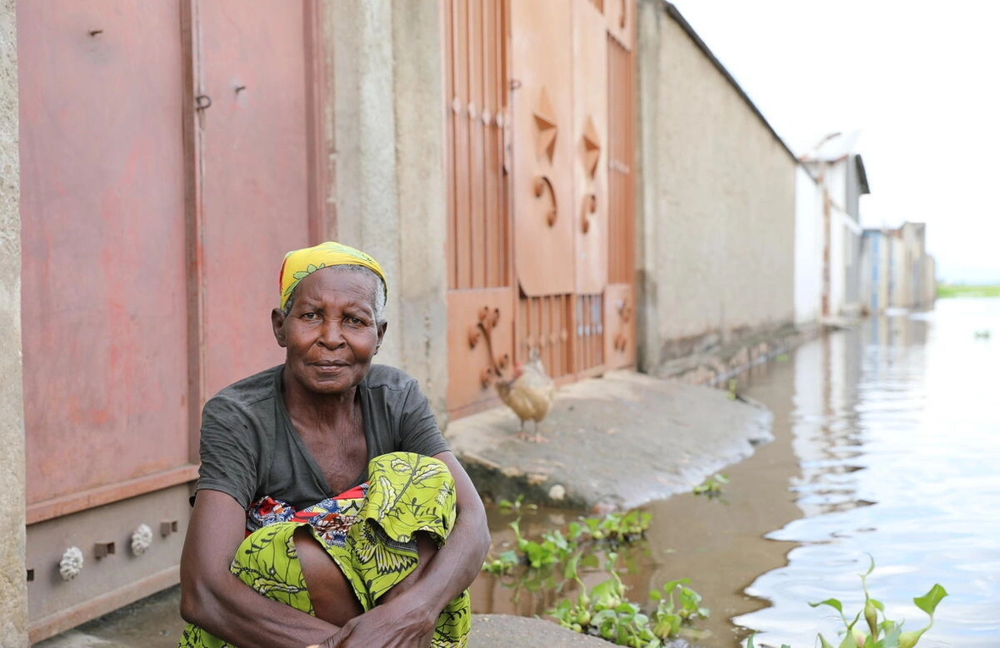

Somali refugee Abdi (centre) and his family were among 25,000 refugees displaced from their homes in Kenya's Dadaab Refugee Complex by flooding in November 2023.

The climate crisis is no longer a distant threat. It’s happening right now, and those forced to flee conflict are being hit the hardest.